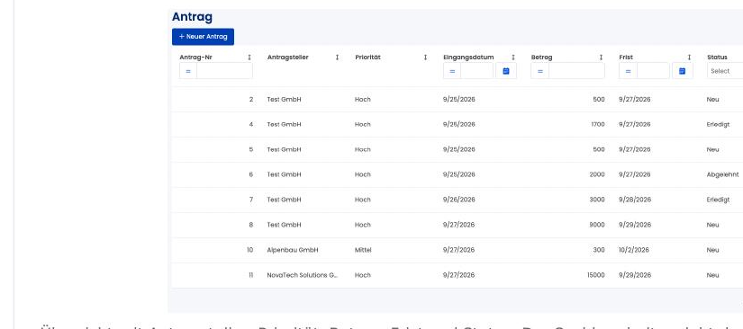
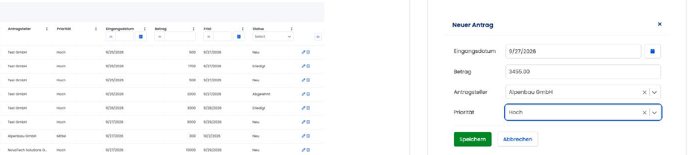
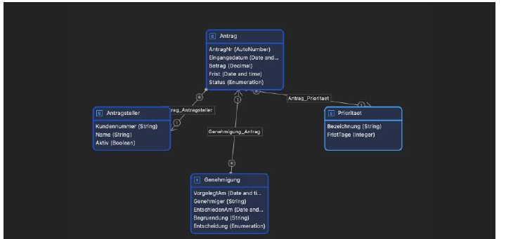
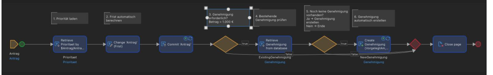
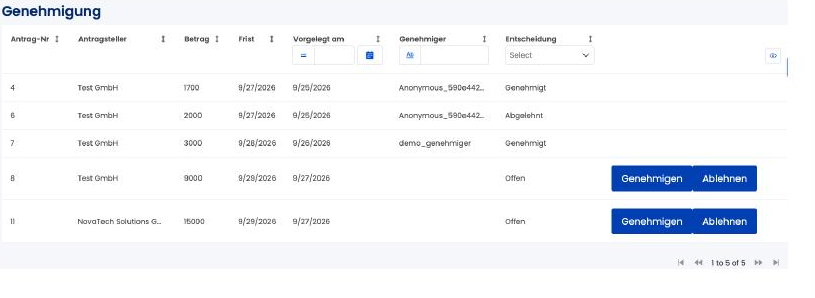

OVERVIEW
Overview
Internal requests are often handled by email or spreadsheets, which makes status, ownership and approvals hard to track. The application moves the process into one system with clear ownership and a transparent status from submission to decision.

Request overview.

Request intake.
SOLUTION
Solution
- Domain model for requests, requesters, priorities and approvals.
- Rule-based approval workflow that determines automatically when an approval is required.
- Consistent status handling across the full request lifecycle.
- Role-based access control with separate views and actions per role.

Domain model.

Approval workflow logic.
ROLES & VIEWS
Roles & views
Case workers and approvers work in separate views with the actions relevant to their role, enforced through Mendix user roles.

Approver view.
NEXT STEPS
Next steps
REST integration with other systems, configurable multi-level approval rules, audit logging and automated tests.